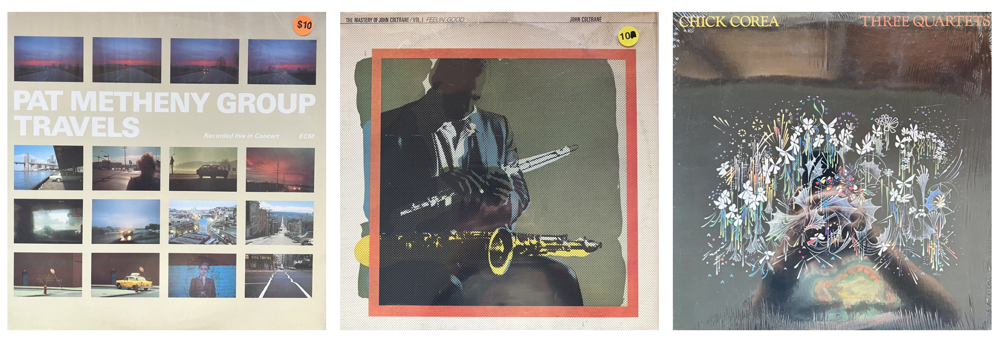

Unplanning my next course prep
ungrading
unplanning
teaching
Sunday morning thoughts on not overplanning while prepping a new course.
Last knit: 2022-10-31
I’ll probably spend more time on making the banner image for this post than writing it because there’s a looming Brooklyn brunch situation, and I only have a simple suggestion for my future self: unplan your course.
I’ve planned lots of courses, and I’m about to plan two more for next semester. One of them is a Macaulay Honor’s seminar for undergraduates in the first year of that program. The seminar is called, “The people of New York City”. It’s a really interesting course that has been taught in many different ways across CUNY. It’s also way outside my realm of expertise, which is typical for everyone who is asked to lead this seminar. Needless to say, I have started planning my approach to the seminar. But, I really don’t want the planning to get in the way, so I’m starting to do unplanning as well.
What does unplanning entail? I’m not so sure yet, so I’m slopping down thoughts about what I might mean. Relatedly, this Fall 2022 semester I am trying “ungrading” (Blum 2020) in my intro to cognition course. This approach can mean lots of different things for a classroom, and I’ve been blogging a bit about that over here. One of the things it means to me is that the class becomes a community space inhabited by participating individual learners. From this vantage point, I’ve been working through what it means to deliver my planned course as a member of the community who is very quickly coming up to speed with community wants and needs.
Brunch
Blogging interrupted by a hamburger

And, I picked up some new records on the walk home, so I get to finish this with some musical inspiration.
In the cognition course I’ve got the planning side of things down. That is, for any class I have lots of pre-planned content and activities that could be done. What I’m becoming more interested in is whether any of the things I planned should be done, especially considering the other possibilities for learning that can be identified together with the rest of the class. Those other possibilities don’t exist before the class, they come into existence with the class. Too much advance planning can easily sideline a class from self-determining their learning process. So, I’m rolling around the term unplanning to make sure I remember not to over plan, and/or to plan for how a community of learners will set, accomplish, and assess their own learning process.
To provide a more specific example, I’ll go back to the honor’s seminar course I’m prepping. There will be about 20 first year students in the class. The course topic is stated as “the people of New York City”, and there are lots of ways to learn about the people of NYC across time and place. The topic is easily way too big for a course. One approach I will take as a course leader is to consider how different research methods might be applied to learning about complex topics such as the people of NYC. This fits with another general course goal of exposing students to research methods and digital means of conducting and communicating research. For example, the Macaulay program encourages students to create blogs and websites, and many previous classes have turned their research products into websites as an end-of-semester project.
Part of my course planning right now involves creating the course website. I’m using quarto to do this (which is the same process I use for this blog and website), and I’m planning to teach my students how to make their own quarto blogs and websites. These will be used throughout the course as a venue to create and share research about the people of NYC.
Where does unplanning fit into this? Right now I’m planning to design most elements of a course as I normally would do. I’ll write the whole syllabus and detail out what I expect will happen for each class time, along with readings and assignments. But, I’ll be looking for places where I think it would be more beneficial for the class to fill in the blanks than it would be for me to fill them in.
For example, in this class we will likely be completing a mini-project every two weeks or so. Each mini-project will explore using a research method to ask and answer questions about the people of NYC. This structure invites all sorts of questions about motivation for the research: what kinds of questions are worth asking, what kinds of answers are worth knowing about, what kinds of stories are we looking to learn about, what kinds of stories will we tell? I have opinions about all of these things, and I could find readings or draft material to inform my students about these opinions. At the same time, I can unplan this part. For example, I would be much more interested in having the class grapple with issues of motivation, and have them explicate and contexualize their motivations as a part of communicating their projects.
In this example, I’d like the class to produce material about their motivations for their research and put it on their website. Or, the whole group can collaborate on statements and content for the course website that reflect the process of self-direction for our learning community.
Unplanning could be me defining sample question-mark spaces that need filling. Overplanning is me filling the space. Unplanning could be “empty” pages on the course website pointing at issues that need to be addressed by the class before the end of the semester. Answering the question marks, or making new ones and answering them, can be part of the mechanism catalyzing the community to engage with itself and motivate how it steps through a learning process.
Somehow I accidentally slipped into blogging on a Sunday, and it’s time to go turn over a record.
References
Blum, Susan Debra. 2020. Ungrading: Why Rating Students Undermines Learning (and What to Do Instead). West Virginia University Press.